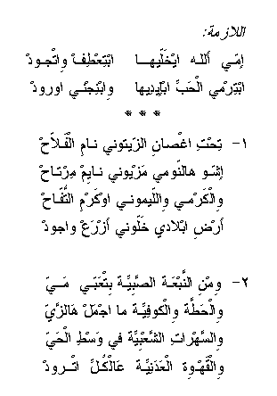

immy Allah eykhalleeha ibti'Tif witjood
ibtirmy il-Habb ibeedeiha wibnijny iwrood
* * *
tiHt ighSan izzaytoony naam il-fallaaH
ishoo hannawmy mazyoony naayim mirtaaH
wilkarmeh willaymoony o karm ittoffaaH
arD iblaady khalloony azra' wa jood
* * *
wimn innab'a iSSabiyyeh bit'abby mayy
wilHaTTa wilkoofiyyeh majmal hazzay
wissahraat isha'biyyeh fee wasT il-Hayy
wilqahweh il-'adaniyyeh 'alkoll itrood
May God protect my mother; she gives generously
She throws the seeds, and we harvest flowers
* * *
The farmer slept under the olive tree
What a wonderful sleep and rest
The grape vines, the lemon trees, and the apples
Made me plant my land and give
* * *
The young lady brings water from the spring
The kufiyya is the best fashion
The popular evenings in the middle of the neighborhood
While everybody is drinking Arabic coffee
Go
back to Palestinian Songs Page
Go back
to Palestinian Folklore Page